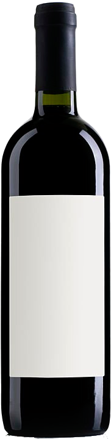

VINOLENCIA TINTO
$1000
⭐⭐⭐⭐⭐
Vinolencia Tinto nace en viñedos ubicados en Valle de Uco, Mendoza. Vino que se obtiene con uvas tintas y fermenta con el mosto y las pieles de las uvas. La materia colorante que contiene la piel, formada por pigmentos insolubles en agua, se disuelve poco a poco en el alcohol producido por la fermentación y da al jugo en fermentación un color cada vez más oscuro.